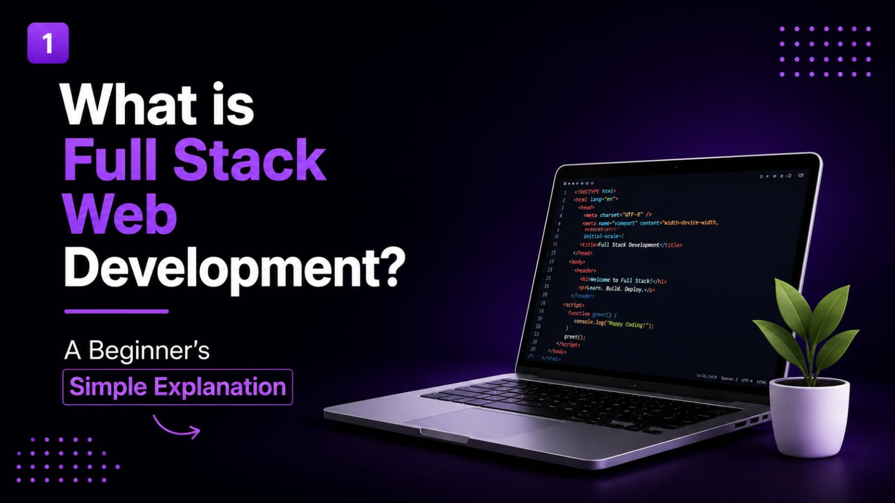
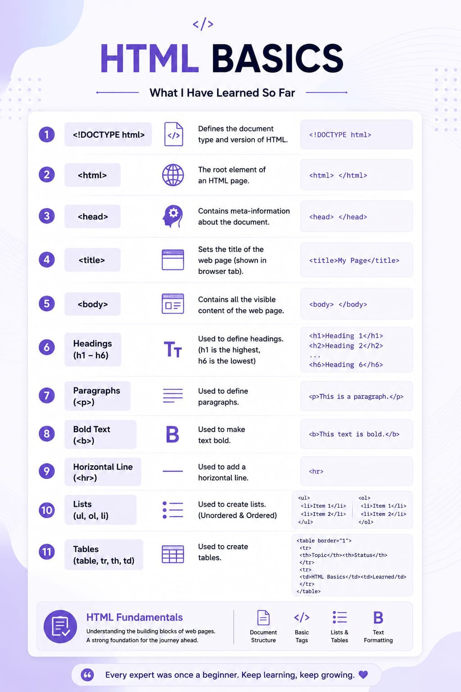
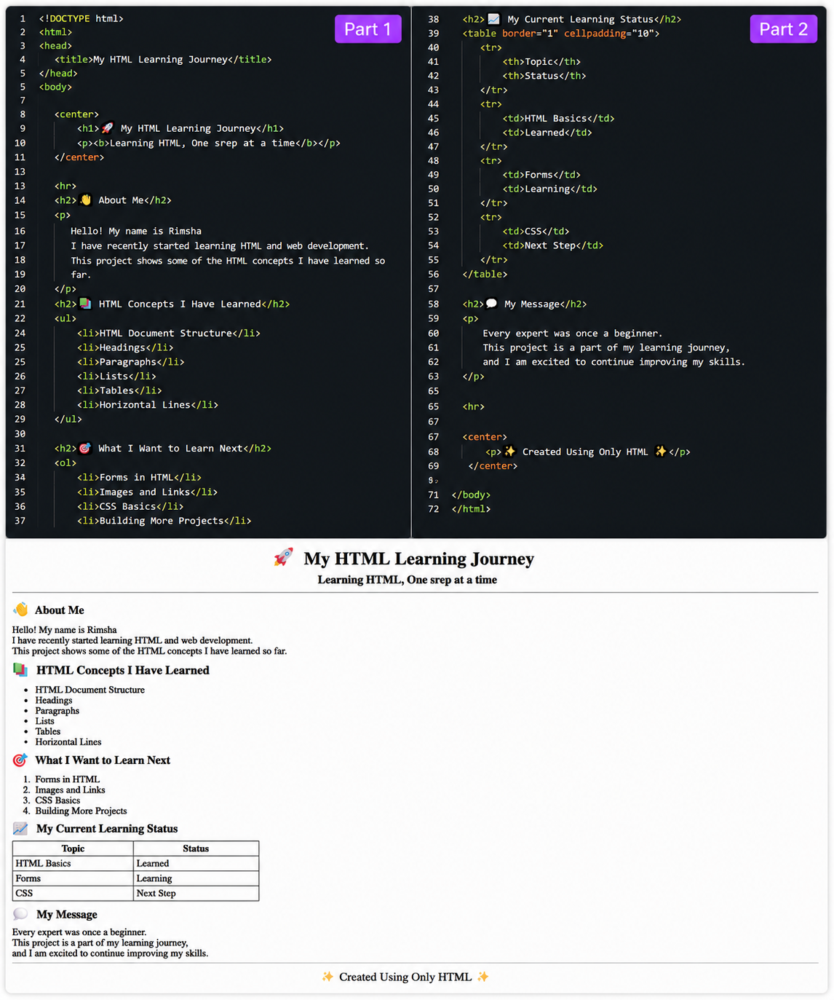
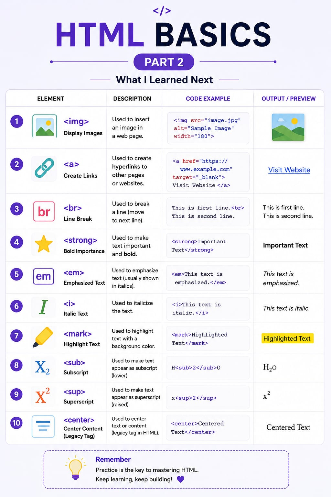
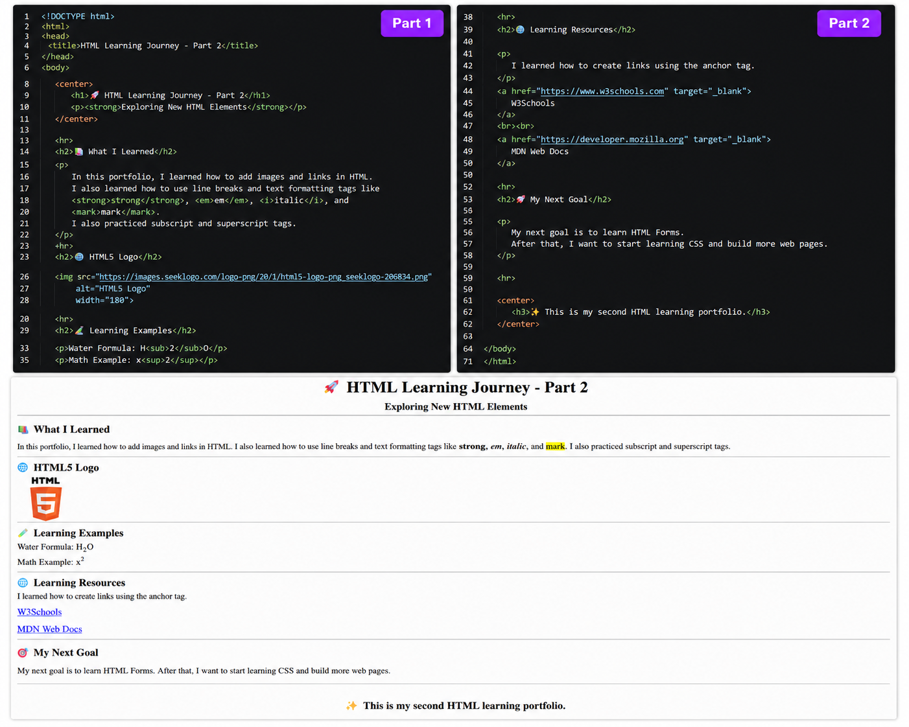
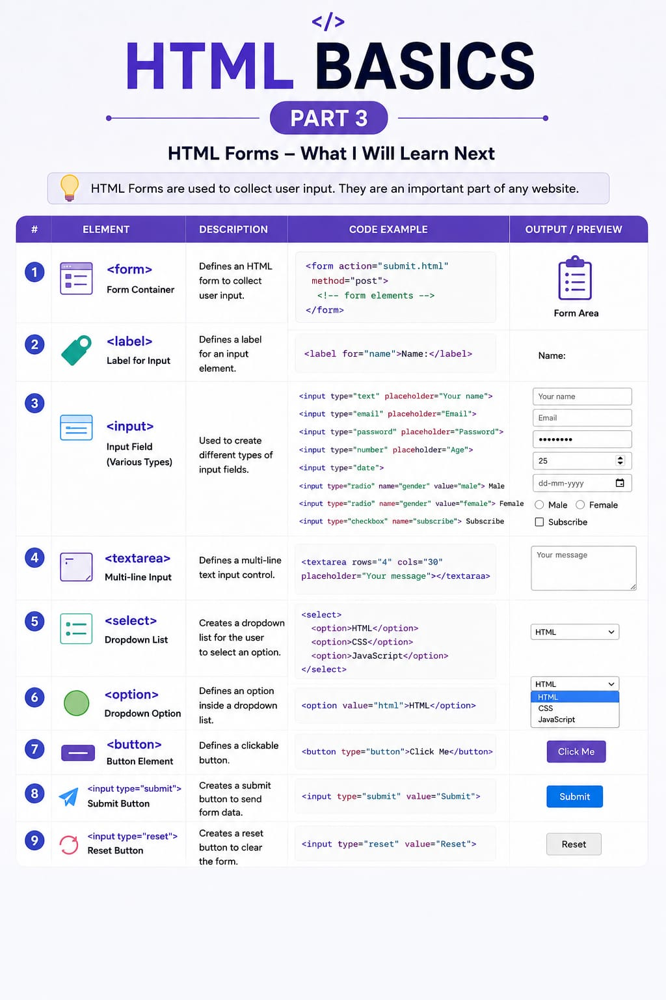
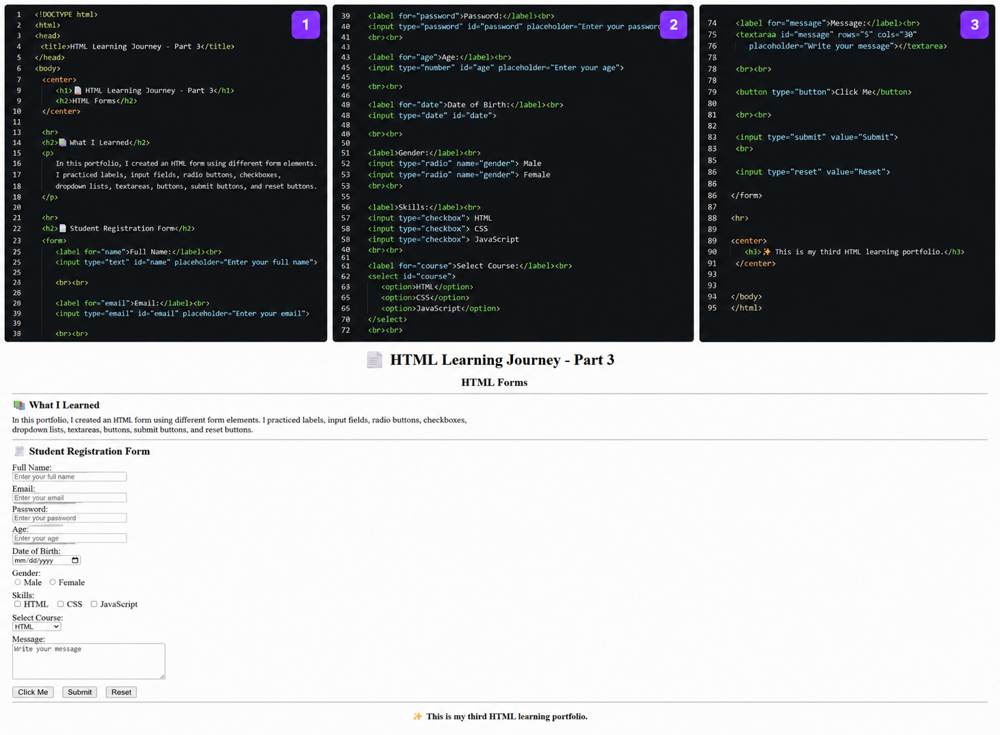
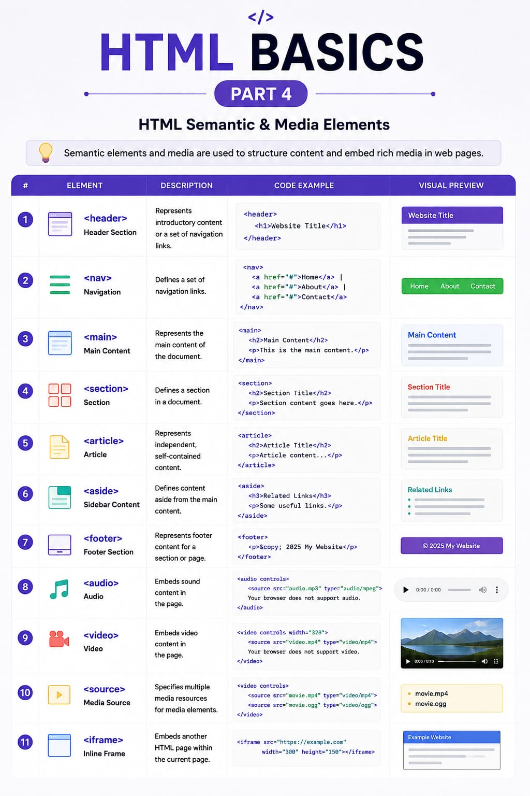
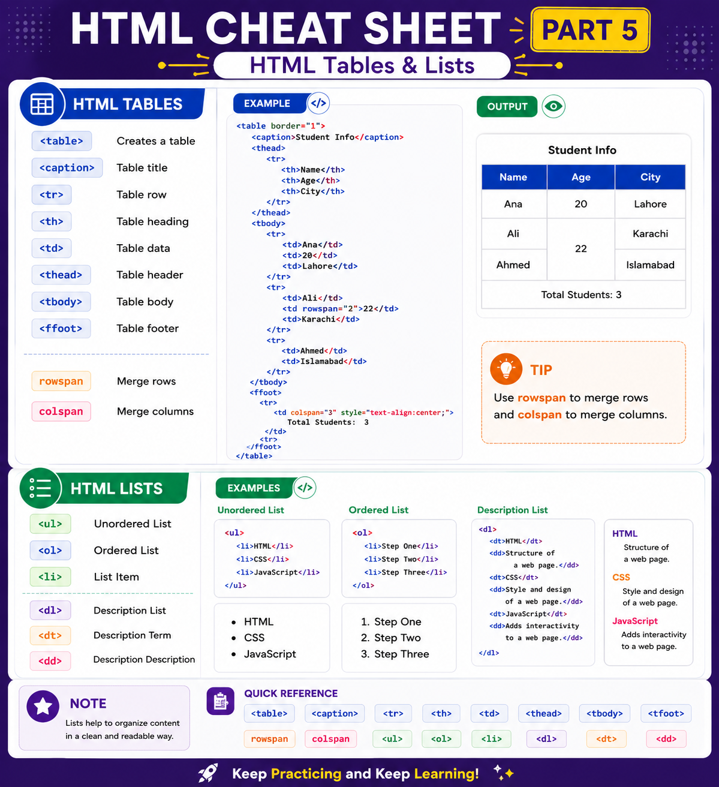
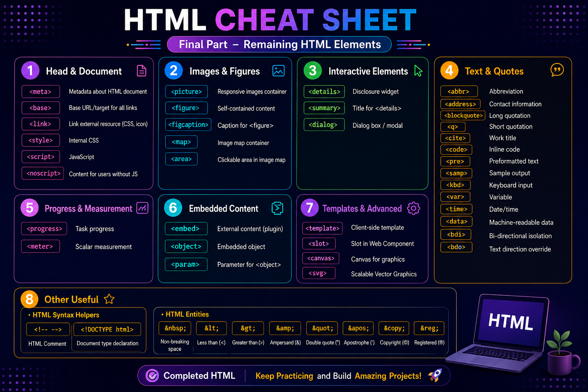

01 — THE FIRST STEPMy Laptop |
|
|---|---|
Where it started
My first LinkedIn post was about my laptop.
I remember looking at my laptop and thinking that I finally
had a place where I could actually try things myself instead
of just watching others learn.
|
|
Where My Journey Started
Before I started HTML, I was still trying to understand what Web Development was actually about and whether it was something I wanted to pursue.
02 — THE CHOICEWhy I Chose Web Development |
|
|---|---|
Why Web Development?To be honest, in the beginning, I didn't even know much about coding or what all those strange-looking things on the screen were. But then I saw those colorful lines of code and all those little words written on the screen... and somehow, I really liked the look of it. I know, not exactly the most technical reason to choose a field, but that little interest made me curious. Slowly, I started thinking, “Okay, what is this actually about?” And the more I looked into it, the more interested I became in Web Development. I wanted to know how those lines of code turn into something people can actually see, use, and interact with. So, what started with me simply liking the look of colorful code slowly turned into a real interest in learning Web Development. Alhamdulillah, that was my first step. |
|
03 — UNDERSTANDING THE FIELDWhat Is Web Development? |
|
|---|---|
|
 |
The bigger pictureBefore going further, I wanted to understand what Web Development actually is and what goes on behind the websites we use every day. I started seeing Web Development as more than just writing code. There was frontend, backend, databases, and a lot more happening behind the websites I used every day. This made things a little clearer for me because I could finally see where HTML fits in. I realized that HTML is just one part of a much bigger picture, and there is still a lot more for me to learn. |
HTML — PART 1Starting With the Basics |
|
|---|---|
|
 |
This is where I started getting familiar with HTML. I began by understanding how a webpage was put together and what different tags were actually used for. One of the first things I came across was <!DOCTYPE html>. I learned that it tells the browser that the page is using HTML5. After that, I started practicing headings from <h1> to <h6>. It took me a little time to remember that <h1> is the largest heading and <h6> is the smallest. Then I practiced writing paragraphs with <p> and making text bold using <b>. These were simple, but they helped me understand how HTML was actually controlling the content on my page. Once I was comfortable with that, I moved on to lists. I practiced <ul> and <ol>, and learned that <li> is used for each item in a list. I also started trying tables with <table>, <tr>, <th> and <td>. At first, I had to think about which tag went where, especially when working with rows and columns. I also practiced <hr> to separate different parts of a webpage. In the beginning, I definitely forgot some tags and had to go back and check them again. But after using them a few times, they started becoming easier to remember. |
The First Project I Built
This was my first try at making something with HTML.
|
 This was the first project I made after learning some of the basic HTML tags. Before making this, I was mostly practicing tags one by one and trying to understand where they were used. I wanted to see what would happen if I put them together in one project. So I started adding the tags I had learned and kept changing things until the page looked right. Sometimes something worked, and sometimes I had to go back and check my code. It was a simple project, but seeing it work on the screen made me feel like I was finally doing more than just learning tags. This was my first proper attempt at building something with HTML. Tags I Used<h1> <h2> <p> <br> <hr> <ul> <ol> <li> <table> <tr> <th> <td> |
HTML — PART 2Making the Page More Useful |
|
|---|---|
|
 |
What I Tried NextOne of the first things I tried in this part was <img> for adding pictures and <a> for adding links. Seeing an image and a clickable link actually work on my own page made HTML feel a lot more interesting. After that, I played around with <br> for moving text to the next line and <strong> for making important text stand out. I tried <em> and <i> too, just to see how they changed the text. The <mark> tag was one I enjoyed using. It was simple, but it made it easy to highlight a word or an important part of a sentence. Then I tried <sub> and <sup>. Writing things like H2O and x2 helped me understand what these tags were actually doing. I also tried <center> while practicing how content could be placed in the middle of the page. None of these things were huge on their own, but trying each tag myself made them much easier to remember than simply reading about them. |
Another Project, A Little More HTML
This time, I had a few more tags to try.
|
 My second project after learning a few more HTML tags. By this point, I wasn't only working with headings and paragraphs anymore. I had started adding images, links and different ways of showing text on a page. I wanted this project to be a little different from my first one, so I tried using the new tags wherever they made sense instead of just adding them for practice. I also played around with things like highlighted text, bold and italic text, and even tried writing things like H2O and x2. Adding an image and making a link work on the page was also something I enjoyed. It was nice seeing the page change as I added these things. I started noticing how much more I could do with these tags. Tags I Used<img> <a> <br> <strong> <em> <i> <mark> <sub> <sup> |
HTML — PART 3Forms |
|
|---|---|
|
 |
Getting Into Forms
Forms were a little different from the HTML tags I had practiced before. I had to understand what each part was for and how everything worked together. I started with the <form> tag and used it to create a place where information could be entered and submitted. Then I practiced <label> and learned how it could be connected to an input field to explain what the field was for. After that, I tried the <input> tag with different types such as text, email, password, checkbox, and radio buttons. Trying them one by one helped me understand why there were different input types in the first place. I also tried <textarea> for longer messages. Unlike a normal input field, it gave me a much bigger space to write in. Then I worked with <select> and <option> to make a dropdown list. It was nice seeing the options appear and work on the page. I used <button> as well, mainly for adding a button that could be used to submit the form. One thing that took me a little more practice was connecting id with for. I was a bit confused about it at first, but once I tried it myself, the connection started making sense. I also tried <input type="reset">. It was useful for clearing the information that had already been entered into the form. |
My Third Project — Working With Forms
This was when I started making pages that could take information.
|
 My third project, where I worked with HTML forms. Forms were one of the parts I had to spend a little more time understanding. There were several tags, and I had to see how they worked together. I started with <form> and then practiced using <label> with different <input> types. I tried text, email, password, checkbox and radio inputs. After that, I worked with <textarea> for longer messages and used <select> with <option> to make a dropdown. I also added <button> and tried submitting the form. One thing I had to practice was connecting the id of an input with the for of its label. At first, that part confused me a little, but after trying it a few times, I understood why the two were connected. I also used a reset button to clear the information that had been entered. This project helped me understand how different form elements could work together on one page. Tags I Used<form> <label> <input> <textarea> <select> <option> <button> |
HTML — PART 4Semantic & Media Elements |
|
|---|---|
|
 |
Understanding Page StructureI started with <header> and practiced using it for the top part of a webpage, like a heading or introduction. Then I tried <nav> for navigation links such as Home, About, and Contact. After that, <main> helped me understand where the main content of a page belongs. I used <section> to divide my content into different parts. This made the structure of the page easier for me to understand. I also practiced <article> for content that could stand on its own, such as an article or a post. <aside> was another tag I tried. I used it for extra information that could be placed beside the main content. I practiced <footer> as well, mainly for the bottom part of a webpage where things like extra information or copyright details could be placed. After working with these structure-related tags, I moved on to media. I tried <audio> for adding audio and <video> for adding videos to a webpage. Along with them, I used <source> to provide the media files for audio and video. I also practiced <iframe> and used it to show another webpage inside my own page. Seeing another webpage appear inside mine was actually pretty interesting. There were quite a few new tags in this part, but practicing them myself made their purpose much easier to understand. |
My Fourth Project — Semantic & Media HTML
Putting Part 4 into practice.
Project Preview
Result |
Code |
From Learning the Concepts to Actually Using Them.
After learning the concepts from Part 4, I wanted to bring them together in a project instead of keeping them only as practice.
This project gave me a chance to use what I had learned and see how the different parts work together on one webpage.
It is a small project, but it is another step in my HTML journey.
Tags I Used
<header> <nav> <main> <section> <article> <aside> <footer> <audio> <video> <source> <iframe>
HTML — PART 5Tables & Lists |
|
|---|---|
|
 |
In this part, I started working with tables and lists. Tables were a little confusing at first, especially when I had to remember which tag went where. I started with <table> and practiced making rows and columns. I also tried <caption> for adding a title to a table. Then I worked with <tr> for rows, <th> for headings, and <td> for the information inside the table. Once I used them a few times, the basic table structure started making more sense. I also practiced <thead>, <tbody>, and <tfoot>. These helped me understand how different parts of a table could be kept separate. rowspan and colspan took me a little longer. I had to practice them a few times before I understood how they could join rows or columns together. After tables, I moved on to lists. I used <ul> for unordered lists and <ol> for ordered lists. The <li> tag was used for the individual items in both. I also tried description lists using <dl>, <dt>, and <dd>. I used <dt> for the term and <dd> for its description. Tables and lists definitely needed some practice, but they became easier once I stopped just reading about them and started making them myself. And honestly, rowspan and colspan tested my patience a little at first. But after trying them a few times, I finally got the idea. |
My Fifth Project — Tables & Lists
Working with Tables and Lists.
Project Preview
Result |
Code |
From Learning Tables and Lists to Building with Them.
After practicing tables and lists, I wanted to use them in a project instead of keeping them as separate examples.
This project helped me understand how rows, columns, and different types of lists can be organised together on a webpage.
Working on it made these concepts much easier to understand because I could actually see the structure taking shape.
Tags I Used
<table> <caption> <tr> <th> <td> <thead> <tbody> <tfoot> rowspan colspan <ul> <ol> <li> <dl> <dt> <dd>
HTML — PART 6Advanced HTML Elements |
|
|---|---|
|
 |
The Final HTML PartThis was the final part of my HTML learning, and honestly, there were a lot of new tags to go through. I had to take my time with some of them because I could not remember everything just by reading about it. I started with <meta> and learned that it gives information about the HTML document. I also tried <base>, which can be used to set a base URL for links on a webpage. Then I worked with <link>, <style>, and <script>. This helped me see how HTML can connect with CSS and JavaScript. I also learned about <noscript> and what happens when JavaScript is not available or is turned off. <picture> was another tag I practiced. I learned that it can be useful when different images are needed for different screen sizes or situations. I also tried <figure> and <figcaption> for keeping an image and its caption together. Then I came across <map> and <area>, which I found interesting because they can make different parts of an image clickable. <details> and <summary> were also fun to try because they let me make content that can be opened and closed. I also practiced <dialog> for showing a dialog box. I tried <progress> and <meter> too. One is useful for showing progress, while the other can show a value within a particular range. I also worked with <embed> and <object> for adding external content. Along with them, I came across <param>, which can provide settings or parameters for an object. <template> and <slot> were probably some of the newer concepts for me. I learned that they are connected with JavaScript and Web Components, so there was definitely more to understand there. I also tried <canvas> and <svg> for graphics. These were interesting because they showed me another side of what could be done inside a webpage. There were quite a few text-related tags too. I practiced <abbr> for abbreviations and <bdi> and <bdo> for working with text direction. I also worked with <q> for short quotes and <cite> for the title or source of a work. Then I practiced <code> and <pre>. These helped me understand how code and preformatted text could be displayed on a webpage. I also tried <samp> for sample output and <kbd> for showing keyboard input. <var> was used for variables, while <time> and <data> were useful for dates, times, and information that can have a meaning for machines. <ruby>, <rt>, and <rp> were new ones for me as well. I learned that they can be used for adding pronunciation or extra text information. Finally, I practiced HTML entities such as , <, >, &, and ". These helped me understand how special characters can be written inside HTML.
There were definitely a lot of tags in this final part.
Some of them really tested my patience, and there were moments
when I just wanted to stop and say, “Okay, enough for today!”
|
My Sixth Project — Advanced HTML Showcase
Bringing My Final HTML Concepts Together.
Project Preview
Project Result |
Project Code |
From Learning to Creating Something of My Own.
This project brings together the concepts I explored throughout my final part of HTML learning.
I wanted to use what I had practiced in one place and see how these different elements could work together in a complete project.
Reaching this project feels different because it is not just another practice task. It represents how far I have come since I started learning the basics of HTML.
Tags I Used
<meta> <base> <link> <style> <script> <noscript> <picture> <figure> <figcaption> <map> <area> <details> <summary> <dialog> <progress> <meter> <embed> <object> <param> <template> <slot> <canvas> <svg> <abbr> <bdi> <bdo> <q> <cite> <code> <pre> <samp> <kbd> <var> <time> <data> <ruby> <rt> <rp>
HTML Project 6 Completed — My HTML Learning Chapter is Complete.
Resources That Helped Me
While learning HTML, I used a few different resources whenever I needed an explanation or wanted to check something.
| Resource | How I Used It |
|---|---|
|
YouTube
Apna College |
I used videos to understand HTML topics and see how different things worked. |
|
freeCodeCamp
freeCodeCamp |
I used it for practicing HTML and going through different concepts. |
|
W3Schools
W3Schools |
I mostly used it when I wanted to quickly check a tag or its usage. |
✓PASSPORT CHECKPOINTThis certificate is from me, to me — for completing this chapter.
HTML CHAPTER
✦ DIGITAL PASSPORT ✦ |
Built with HTML. Built through practice.
Chapter Completed: HTML | Next Destination: CSS
© 2026 | My HTML Learning Journey